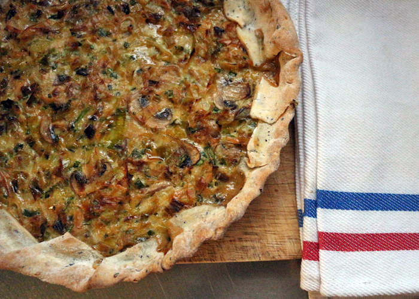

Delisioso
Delisioso y sencillo, recetas para todos los dias
Favoritos:


| Historial: |
|---|
| - |
| - |
| - |
| - |
| - |
| - |
| - |
TARTA LIVIANA DE PUERRO Y CHAMPIÑONES
11 de abril 2019
Amo hacer tartas! creo que ya lo dije en varias ocasiones. Me encanta porque me parece un plato rico, muy de acá, porque es parte de nuestras costumbres en la cocina. Rendidor, ideal para juntarse y compartir, fácil de hacer, y lo bueno es que hay muchas variables de relleno! Hoy les comparto esta versión de puerro y champiñones, dos ingredientes que me encantan y que juntos son una explosión de sabor! Esta vez no tenía tiempo de hacer la masa, pero quise usar una tapa que sea liviana y rica como la que hago yo, así que elegí la de Mix de semillas de La Salteña, porque es bien sequita, tiene harina integral y el toque de las semillas que nos encanta. Para el relleno, elegí no usar crema, porque quería hacer una tarta liviana, para comer en el almuerzo y sentirme con energía para seguir trabajando! Les comparto la receta, espero que les guste!